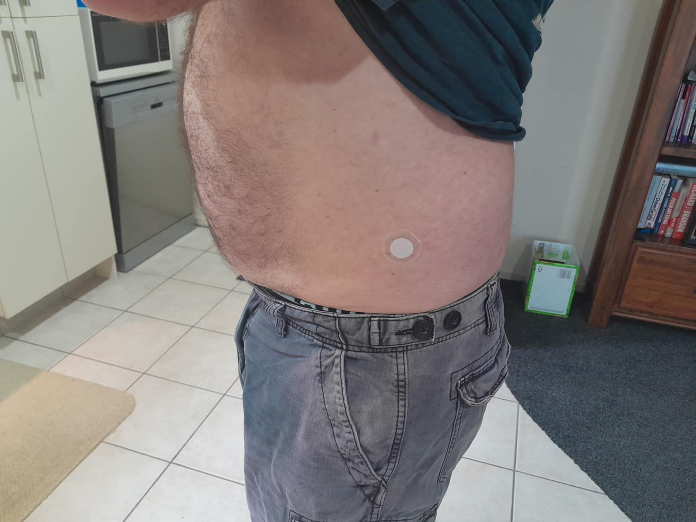
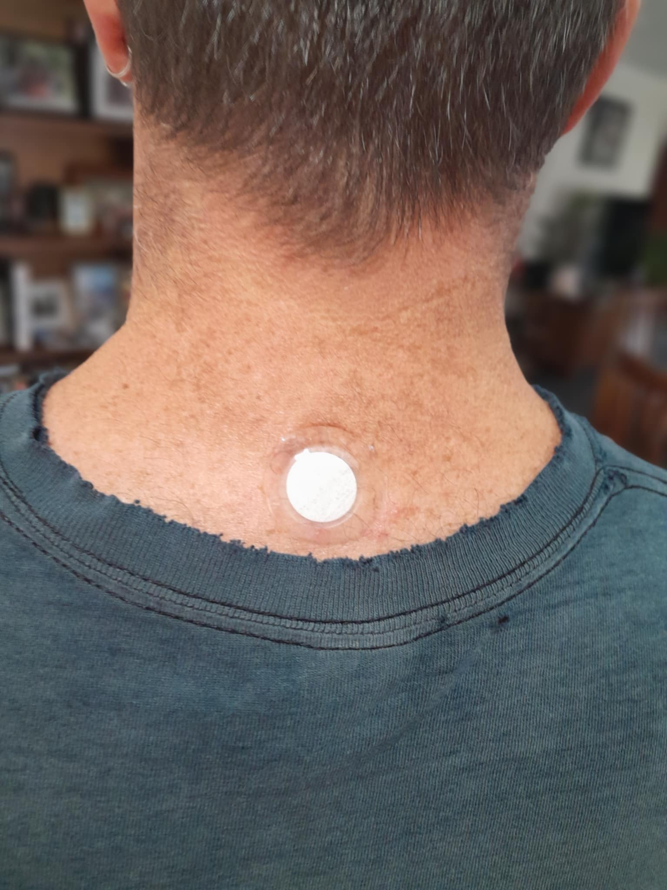

Where Do You Place the X39 Patch?
Site identity: This is an independent guide by Dave Ross, a LifeWave Brand Partner in New Zealand. It is not an official LifeWave corporate page.
What matters most: good adhesion, low friction from clothing, and a simple routine you can follow every day.
| Placement area | Why people choose it | Practical note |
|---|---|---|
| Back of neck | Easy to remember and commonly discussed | Often stays stable during normal daily activity |
| Lower abdomen | Discreet and easy to keep covered | Works well for many simple routines |
| Upper torso | Comfortable for some users and easy to access | Choose a lower-friction spot |
| Wrist | Visible and easy to monitor | Frequent movement can affect adhesion |
| Ankle / lower leg | Accessible for some routines | Socks and shoes can increase rubbing |
These are commonly discussed example locations. They are not a ranked list and they are not a guarantee of results.
If you’re trying to figure out LifeWave X39 patch placement, you’ve probably already seen a mix of different answers online. Some say the neck, others say the abdomen, and some make it sound like there’s one exact “perfect” spot you need to find.
In reality, X39 patch placement is much simpler than that. What matters most is choosing a spot that stays comfortable, stays in place, and fits into a routine you can actually stick with day after day.
This guide breaks down the most commonly used placement areas, what actually matters in real-world use, and how to choose a location that works for you without overcomplicating it.
If you are still getting the broader product category clear, start with how the X39 patch is designed to work. If your next question is daily timing, read How Long Should You Wear the X39 Patch Each Day?.
This section reflects my personal experience only and is shared for general informational purposes. It is not intended to replace official product guidance or individual judgement.
Over time, my own approach to placement became much simpler once I stopped trying to find one exact “perfect” spot.
Early on, I tried placing the patch closer to one specific area for about a month, but I didn’t really notice anything meaningful day to day. It felt like I was overthinking it.
Later, I changed my approach and placed it on my left hip area instead. Within about 5 to 7 days, I noticed things felt more settled and less distracting during the day. It wasn’t dramatic, but it was noticeable enough that I stuck with it.
After a few weeks, I found myself thinking about it less altogether. I stopped constantly checking or adjusting things, which made it easier to stay consistent.
Over time, it simply became part of my routine rather than something I focused on. I also found that certain placements, like the back of the neck, felt easier to remember and fit naturally into daily life.
Everyone’s experience may be different, but for me this reinforced that comfort, consistency, and simplicity mattered more than trying to find one exact “perfect” spot.


What official guidance usually points readers toward
Official materials generally frame placement as a practical application question, not as a secret-code question. Most LifeWave X39 placement guidance points readers toward clean, dry skin and example areas that are easy to access and easy to repeat as part of a daily routine.
That matters because it resets how beginners think about the whole topic. The better question is usually not, “What is the one best spot?” The better question is, “What is a sensible spot I can use comfortably and consistently?”
For source material, readers should compare any placement advice with official manufacturer information and the product insert available from LifeWave official resources. Reviewing original materials helps keep placement decisions grounded in how the product is intended to be used.
Why online X39 placement advice sounds inconsistent
Part of the confusion around LifeWave X39 patch placement is that people often repeat example locations without explaining the practical reason a spot may or may not fit someone’s real routine.
There are three common reasons the conversation gets messy.
- Example locations get repeated like fixed rules. A commonly shown placement can start sounding mandatory even when it is simply common.
- People mix personal routines with general guidance. One person’s habit can get repeated as if it applies equally to everyone.
- Different X39 questions get blended together. Placement, wear time, expectations, and sensation often get discussed all at once.
That is why placement feels more complicated online than it usually needs to be in practice.
How placement connects to how X39 is designed to work
A lot of confusion comes from treating placement like a separate topic from the rest of the X39 conversation. In reality, placement makes more sense when you connect it to how the product is described overall.
On this site, the simpler beginner explanation is that the patch is worn externally as part of a daytime wellness routine. That means placement is mainly about choosing a skin location that is practical for normal wear. It is not usually helpful to think of placement as a hunt for one mythical point that determines everything.
That is also why this page keeps returning to the same ideas: comfort, stability, adhesion, and repeatability. Those are the factors that make placement usable in real life. If you want the broader context first, read How X39 Is Designed to Work. It helps explain why placement is better viewed as part of a daily routine than as a stand-alone mystery.
The most useful placement question is usually not “Where is the perfect spot?” It is “Where can I place this patch cleanly, comfortably, and consistently without fighting my day?”
Common placement areas people ask about
The most frequently discussed areas are usually the ones that are easiest to access and easiest to fit into a normal day.
- Back of the neck: often mentioned because it is easy to remember and often stays stable.
- Lower abdomen: commonly chosen because it is discreet and easy for many routines.
- Upper torso: chosen by some people because it is practical and easy to apply.
- Wrist: visible and simple to monitor, but can be higher movement.
- Ankle or lower leg: practical for some people, though socks or shoes can increase friction.
These locations are better understood as practical examples than as a strict best-to-worst ranking. What works smoothly for one person may feel awkward for someone else depending on clothing, skin sensitivity, body hair, and how active they are during the day.


Choose a spot that is clean, dry, comfortable, and easy to repeat. That rule helps more beginners than chasing internet debates about a single perfect point.
How to choose the best place for your own routine
In real life, the best place for X39 placement is usually the place that checks four boxes:
- It is easy to reach
- It stays on well
- It is not irritated by clothing or movement
- It fits naturally into your normal daily routine
If a location sounds good in theory but feels awkward every morning, that matters. If a location keeps rubbing against clothing, that matters too. Practicality wins here.
Many beginners also benefit from asking two very ordinary questions before they apply the patch: “Will this area stay fairly undisturbed today?” and “Will I remember this same spot tomorrow?” Those two questions often lead to better placement choices than overthinking diagrams or online arguments.
Once placed, most people follow a daily wear routine — see how long to wear the X39 patch each day.
Skin, adhesion, and environment factors people often overlook
This is one of the biggest practical gaps in a lot of X39 content. Beginners often focus so much on where to place the patch that they overlook the conditions that affect whether it stays in place comfortably in the first place.
Even a sensible location can become annoying if the skin is damp, recently lotioned, oily, heavily rubbed by clothing, or naturally harder for adhesive to grip. That does not automatically make the location wrong. It just means placement and adhesion are connected.
Factors that commonly affect day-to-day wear include:
- Lotion, oils, or moisturiser: these can make it harder for the patch to stick reliably.
- Sweat and heat: warmer conditions or physical activity can affect how secure a patch feels over time.
- Body hair: some areas may simply be less practical if adhesion is inconsistent there.
- Clothing friction: collars, waistbands, sleeves, socks, or tighter fabrics can rub the patch repeatedly.
- Movement patterns: a spot that bends, twists, or stretches constantly may feel less stable during normal activity.
This is one reason clean, dry skin gets repeated so often in basic guidance. It sounds simple, but it solves a surprising amount of beginner frustration. Choosing a smoother, lower-friction area can also make the entire routine feel easier and less distracting.
If a placement sounds ideal but keeps rubbing, lifting, or feeling awkward, the issue may be adhesion and environment rather than the concept of the placement itself.
Why consistency matters more than finding one “perfect” placement
For many beginners, consistency is the missing idea that finally makes the page make sense. Placement matters, but it usually matters most because it affects whether your routine stays simple enough to repeat.
That is why a stable, comfortable location often beats an exciting-sounding location. A patch routine that is easy to remember, easy to apply, and easy to live with tends to create less confusion than constantly changing spots in search of a dramatic difference.
Consistency also helps reduce unnecessary variables. If you change the location every day, change the time every day, and keep adjusting the routine, it becomes harder to tell whether your experience is actually being shaped by the product, your expectations, or the routine itself.
Simple does not mean careless. It means repeatable.
What usually goes wrong with placement
Most placement problems are ordinary. They are rarely about some catastrophic mistake. They are usually about wearability.
- Applying the patch to skin that is not fully clean or dry
- Placing it over lotion, oil, or heavy moisture
- Choosing an area with too much friction
- Using a location that sounds good online but does not fit your real routine
- Changing locations constantly instead of building one repeatable habit
- Repositioning the patch after application and reducing adhesion
- Overthinking placement because expectations are too high
A lot of beginner confusion comes from assuming that if the routine feels uncertain, the answer must be to change the spot again. Very often, the better move is to simplify: choose one practical location, apply it to clean and dry skin, and stop turning placement into a daily experiment.
This is also one reason some readers wonder whether they should feel something right away. Many do not. If that is your next question, read Do You Feel X39 Working?.
Does placement affect how well the patch fits into daily life?
Yes. Even if two placements are both reasonable, one may fit your lifestyle better.
A stable, low-friction location can make the routine easier to keep. A spot that rubs, loosens, or feels awkward can make the product feel harder to use than it needs to be. That is why consistency matters so much. A routine you can follow calmly is usually more useful than one you keep changing.
Placement is not just a technical question. It is also a lifestyle question. A spot that works for someone who wears loose clothing and moves lightly through the day may not feel as practical for someone working physically, sweating often, or wearing tighter layers.
What new users often miss
Many beginners assume placement is the whole game. It usually is not.
Placement is one part of a wider beginner routine that includes wear time, expectations, and patience. People often get much more clarity when they view the patch as a steady daily habit rather than as something that must create instant feedback.
Another thing new users often miss is that a “good” placement is not automatically the one most talked about online. It is the one you can actually live with. The back of the neck may be popular. The lower abdomen may be popular. The wrist may be convenient. But popularity and practicality are not always the same thing for every person.
That broader expectation picture is covered in What to Expect With X39 and What Should You Expect in the First 30 Days With X39?.
Placement and expectations should stay connected
One subtle reason this topic gets overcomplicated is that people sometimes expect placement to create an obvious or immediate signal. When that does not happen, they assume the spot must be wrong.
That is not always a useful conclusion. Placement and expectations need to stay connected. A practical placement supports the routine. It does not guarantee a dramatic feeling. Many users report no obvious sensation at all, which is why pages about timing, expectations, and first-month experience matter just as much as pages about where to put the patch.
In other words, placement can help remove friction from the routine, but it should not carry more meaning than it realistically deserves.
A practical beginner approach
If you are just getting started, keep it simple. Pick a comfortable area on clean, dry skin. Use a spot that is easy to remember. Avoid overcomplicating the decision. Then follow the normal routine consistently.
That approach does two useful things. First, it reduces confusion. Second, it makes it easier to judge the experience over time without constantly changing variables.
A sensible beginner approach often looks like this:
- Choose one common, easy-to-manage location
- Apply the patch to clean, dry skin
- Check that clothing is not likely to rub the area heavily
- Use the same general routine for a while before changing things unnecessarily
- Compare your decisions with official product instructions rather than internet repetition alone
That is not flashy advice, but it is usually the advice that keeps the whole experience calmer.
Sources
Information on this page is based on publicly available manufacturer materials, general product guidance, and common beginner questions discussed around X39.
- LifeWave official website
- LifeWave X39 product information
- LifeWave placement guidance and product materials
- Public beginner questions and common placement examples discussed around X39 use
Readers should always compare any placement discussion with the official manufacturer instructions supplied with the product.
X39 Placement FAQ
If you are comparing common examples of X39 patches placement, the most useful approach is to focus on comfort, consistency, and practical daily wear rather than trying to find one “perfect” location.
Where do you place the X39 patch?
The X39 patch is typically placed on clean, dry skin in a practical location that stays in place during normal daily activity. Common example areas often discussed include the back of the neck, lower abdomen, upper torso, wrist, and ankle.
What is the best place to put the X39 patch?
There is not one universal best place. The better choice is usually the spot that feels comfortable, stays on well, and fits your routine without creating friction or distraction.
Does X39 patch placement matter?
Yes, but mainly for practical reasons. Placement can affect comfort, adhesion, and how easy the patch is to wear consistently during the day.
Can you put the X39 patch in different places?
Yes. Different example placements are commonly discussed. Many people eventually settle on one or two practical spots rather than changing locations constantly.
Is the back of the neck a common X39 patch location?
Yes. It is one of the most commonly mentioned example locations because it is easy to remember and often stable during ordinary daily movement.
Is the lower abdomen a common place to wear X39?
Yes. Many beginners find it practical because it is discreet and easy to fit into a simple routine.
Can you wear the X39 patch on your wrist?
Some people do. The main trade-off is that wrist movement can sometimes make the patch less secure than a lower-movement area.
Can you wear the X39 patch on your ankle?
Some people choose the ankle or lower leg. Just keep in mind that socks, shoes, and rubbing can affect comfort and adhesion.
Do you need to rotate where you place the X39 patch?
Not always. Some users keep the same location for simplicity. Others rotate spots for comfort or because of adhesive sensitivity.
What happens if you place the X39 patch in the wrong spot?
Usually the issue is practical, not dramatic. The patch may feel less comfortable, stay on less well, or rub more during the day.
Can you move the patch after you put it on?
It is generally better to choose the location first and leave it in place. Repositioning can reduce adhesion.
Should the X39 patch go on clean and dry skin?
Yes. Clean, dry skin is one of the simplest ways to make the patch easier to apply and easier to keep in place.
Can lotion affect where you place the X39 patch?
Yes. Lotion, oils, sweat, and moisture can all interfere with adhesion. That is why a clean, dry area is usually the better starting point.
Can body hair affect X39 placement?
It can. Hair can make adhesion less reliable in some areas, which is another reason many people choose smoother, lower-friction spots.
Where should you not place the X39 patch?
It is sensible to avoid irritated, damaged, or heavily rubbed skin. Always compare any placement choice with official manufacturer instructions.
Does clothing matter when choosing X39 placement?
Yes. Waistbands, collars, sleeves, socks, and tight clothing can all increase rubbing and make some placements less practical.
Is there one official placement chart everyone must follow?
Readers often see several example placements discussed. It is better to compare online explanations with official product materials than to treat every repeated example as a fixed rule.
Can you use the same X39 patch location every day?
Some people do because it keeps the routine simple. Others switch occasionally for comfort. The goal is a routine that stays manageable.
Does the best X39 placement depend on your daily routine?
Yes. The best location is often the one that fits how you dress, move, and apply the patch each day.
Is it better to keep placement simple as a beginner?
Yes. A simple, repeatable routine usually creates less confusion than constantly testing new spots.
How long should you wear the X39 patch after placing it?
Many users follow the common daytime routine of wearing one patch for up to 12 hours. For the full timing guide, read How Long Should You Wear the X39 Patch Each Day?.
Should you expect to feel something depending on where you place it?
Not necessarily. Many users report no obvious sensation at all. If sensation is your concern, read Do You Feel X39 Working?.
What should a beginner do first when choosing a placement spot?
Start with a clean, dry, comfortable area that is easy to reach and easy to remember. Then keep the routine steady instead of overthinking it.
Trust and Publisher Information
Patch Reference Hub is an independent informational website created by Dave Ross. It is not an official LifeWave corporate website.
This site is for educational purposes only and does not provide medical advice. Individual experiences vary. Follow the manufacturer’s instructions and speak with a qualified healthcare professional about personal health questions.
Publisher: Dave Ross ; New Zealand
Contact: dave@patchreferencehub.com